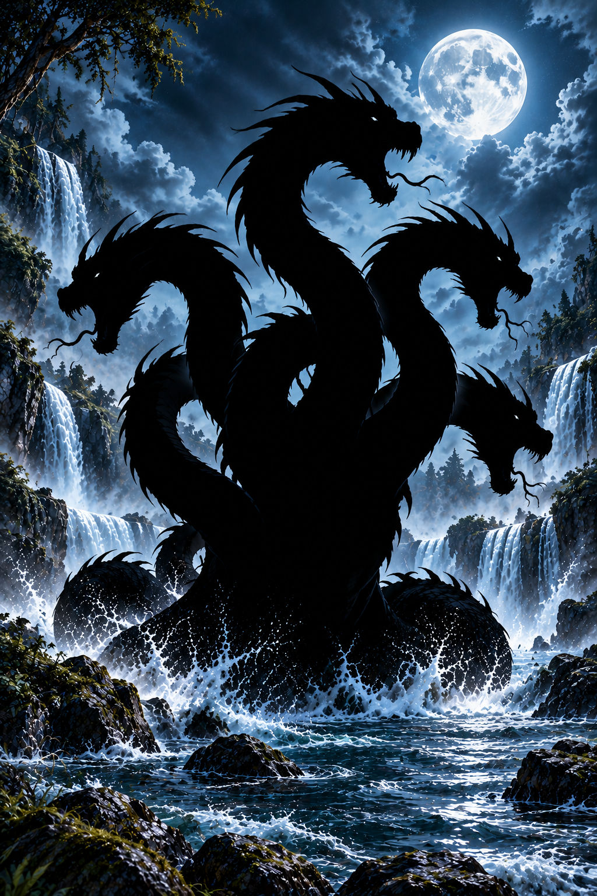

Hydra • Holographic Preview
Approved Hydra artwork • Original gold trim with tilt-reactive gold shine • Icy-white opal gemstones • Glacial moonlit holographic foil • Rising star sparkles • Automatic passing shine across Hydra silhouette


Tilt: 0° horizontal / 0° vertical